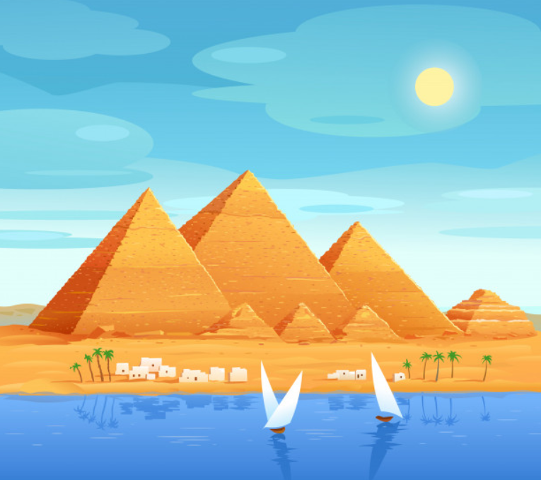

Op deze webpagina kan je meer lezen over de thema’s die naar voren komen in het bordspel “Boeren van de Nijl”. Deze thema’s zijn de Nijl en Landbouw in Oud-Egypte.Tijdens het spelen van het bordspel leer je namelijk over de Nijl en hoe de boeren van Oud-Egypte leefden. Ga op avontuur en ontdek op deze pagina alle wonderen van de Nijl en de bijzondere landbouw van Oud-Egypte nog verder. Nadat je deze pagina hebt gebestudeerd, kan je de quiz maken als je wilt!
De Nijl
Egypte was vroeger een heel belangrijk land. 5000 jaar geleden konden zij al huizen bouwen. Ze hadden al een schrift om te lezen en te schrijven, steden en maakten mooie dingen. Door Egypte stroomt een hele lange rivier. Die rivier heet “De Nijl”. Deze rivier is wel 6650 kilometer lang. Eén keer per jaar stroomde deze rivier over. De Egyptenaren waren de god Hapi dankbaar dat die overstroming ieder jaar gebeurde. Want nu was de grond langs de rivier vruchtbaar geworden. En dan konden de mensen daar gewassen op verbouwen. Zo konden de Egyptenaren aan voedsel komen. Doordat er steeds meer mensen bij de Nijl kwamen wonen, onstonden er regels. Anders kwam er namelijk ruzie. Zo is de Oud-Egyptische samenleving en cultuur ontstaan.

Waar precies ligt de Nijl eigenlijk?
De rivier de Nijl ligt in het continent Afrika. De Nijl begint in Burundi, een land dat in Centraal-Afrika ligt. Het stroomt... door naar Noordoost-Afrika en uiteindelijk stroomt de Nijl door tot Egypte. Tenslotte stroomt de rivier de Middellandse Zee in. De Nijl hielp de Egyptenaren bij de handel. De Nijl was namelijk de snelste en gemakkelijkste manier om van plaats van plaats te reiden in Oud-Egypte. Er werden dus veel producten via de Nijl vervoerd.
Waarom leefden de Egyptenaren bij de Nijl?
Elk jaar overstroomde de Nijl. Dit gebeurde in de maanden juni tot september. Het water bleef ongeveer 6 weken liggen en al het land om de Nijl heen... stond onderwater. Dit was het oogstseizoen. Tijdens dat seizoen konden de Egyptenaren niet op land werken. Aan het einde van het oogstseizoen stroomde het water langzaam weer weg. Er werd een vruchtbare grond achter gelaten. De Egyptenaren waar hier heel blij mee, want dan konden ze hun gewassen verbouwen en zo kwamen de Egyptenaren aan voedsel. In Egypte viel er bijna nooit neerslag en daarom was de Nijl de enige bron van water om gewassen te kunnen verbouwen en om aan eten te komen. Hierdoor legden boeren veel akkers langs de Nijl en gingen steeds meer Egyptenaren zich langs de Nijl vestigen. De Nijl werd ook de hoofdroute voor transport en handel in Egypte.
Waarom overstroomde de Nijl?
De Egyptenaren geloofden in veel goden. Een god daarvan was de god Hapi. Dit was de god van de Nijl. De Egyptenaren geloofden dat Hapi de Nijl liet... overstromen. Voor Hapi werden er tempels gebouwd. Hier brachten de Egyptenaren offers (meestal voedsel) en vroegen ze of Hapi de Nijl kon laten overstromen. Nu weten dat de Nijl overstroomde door het regenseizoen Ethiopië dat van eind mei tot begin september duurde. Als het in Ethiopië regende, kwam er veel regenwater in de Nijl terecht. Hierdoor werd de Nijl steeds breder en breder. Zo breed dat de oevers in Egypte bijna elk jaar overstroomden.
Landbouw in Oud-Egypte
In Oud-Egypte was de landbouw erg belangrijk. Door de landbouw konden mensen gewassen verbouwen en aan voedsel komen. Landbouw was alleen mogelijk bij de Nijl, omdat dat de enige bron van water was in Oud-Egypte. De Egyptenaren verdeelde hun kalender in 3 seizoen, grotendeels gebaseerd op de getijden van de rivier de Nijl. De seizoenen waren: Ahket, Peret en Shemu.
Wat is het overstromingsseizoen?
Het overstromingsseizoen was het eerste seizoen en liep van juni tot en met september.Door de Egyptenaren werd dit seizoen Ahket genoemd, wat... overstroming betekent. Tijdens deze periode konden de boeren niet werken op het land omdat dit overstroomd was. De boeren onderhielden de dijken en kanalen die de dorpen beschermden tegen het water van de Nijl. Veel boeren hielpen ook mee bij het bouwen van piramides voor de farao. Soms was er te weinig water van de Nijl. De oevers droogden uit. Hierdoor konden de boeren bijna niets zaaien en oogsten en dat betekende dat veel mensen honger hadden. In sommige jaren was er juist te veel water van de Nijl. Boerderijen stonden onder water en hun huizen en stallen gingen kapot. Sommige boeren bouwden een dijk rond hun akkers. Ze maakt een muur van aarde die water tegenhield. Dit maakte het leven langs de Nijl een stuk veiliger. Andere boeren groeven kanalen van de Nijl naar hun akkers toe. Via de kanalen kon het water nu het hele jaar door bij de akkers komen. Ook waren er boeren die grote vijvers maakten. Bij overstromingen kwamen de akkers dan niet onder water te staan, maar liepen de vijvers vol. De boeren goten dan zelf zakken vol water over de akkers. Niet te veel en niet te weinig, precies zoals zij het wilden. De boeren konden het water leiden naar plaatsen waar het niet vanzelf kwam. Dit heet irrigatie.
Wat gebeurde er in het zaaiseizoen?
Het tweede seizoen was het zaaiseizoen en liep vanaf oktober tot februari. Dit seizoen werd door de egyptenaren... Peret genoemd. Na de overstroming van de Nijl, waren de oevers van de Nijl nat en vruchtbaar. Tijdens deze periode zakte het water van de Nijl en begonnen de boeren hun akkers te bewerken. De boeren zaaiden ook hun gewassen in de grond. Boeren verbouwden gewassen zoals tarwe, gerst en papyrus. Daarnaast verbouwden de boeren ook fruit en groenten. Het belangrijkste gewas was graan. De Egyptenaren gebruikten graan om brood en pap te maken. Graan werd als eerst verbouwd na het overstromingsseizoen. Nadat graan werd verbouwd, werden andere groenten verbouwd, zoals uien, komkommer, slakroppen en bonen.
Wat gebeurde er in het oogstseizoen?
Het laatste seizoen was het oogstseizoen, ook wel Shemu genoemd door de Egyptenaren. Deze periode liep van maart tot mei. Tijdens deze... periode werden de gewassen die in zaaiseizoen waren geplant verzameld en geoogst. De Egyptenaren bouweden ook dijken en kanalen om hun gewassen te beschermen tegen de Nijl. Dit heet irrigatie.